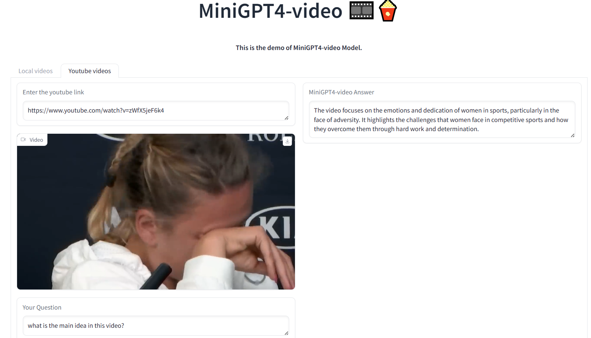
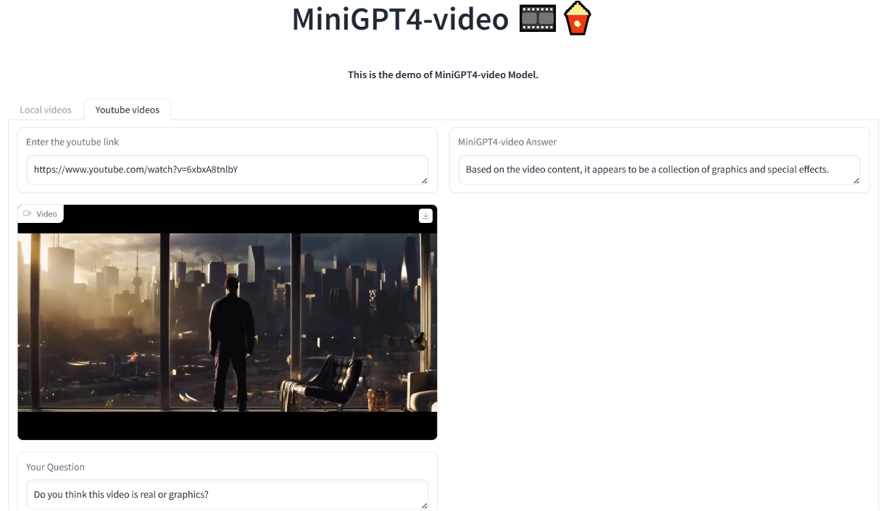
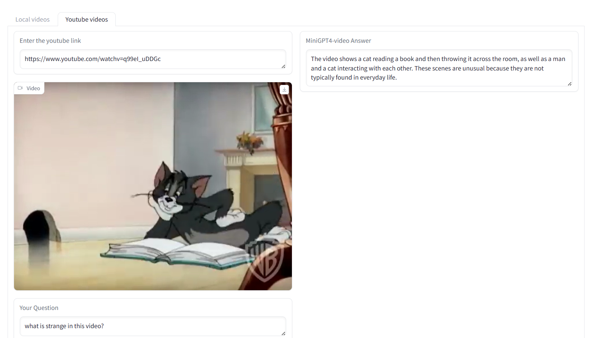
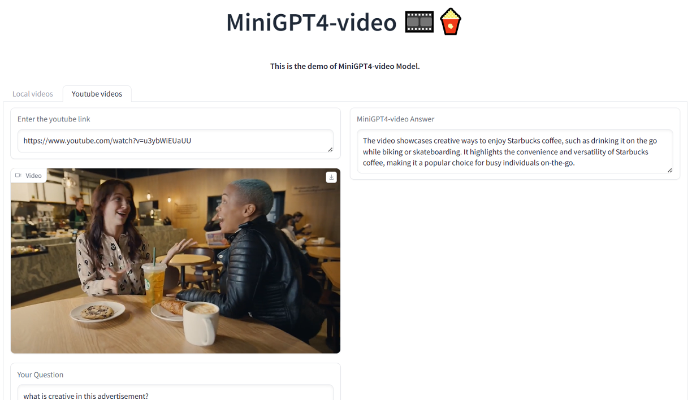

Examples






This paper introduces MiniGPT4-Video, a multimodal Large Language Model (LLM) designed specifically for video understanding. The model is capable of processing both temporal visual and textual data, making it adept at understanding the complexities of videos. Building upon the success of MiniGPT-v2, which excelled in translating visual features into the LLM space for single images and achieved impressive results on various image-text benchmarks, this paper extends the model's capabilities to process a sequence of frames, enabling it to comprehend videos. MiniGPT4-video does not only consider visual content but also incorporates textual conversations, allowing the model to effectively answer queries involving both visual and text components. The proposed model outperforms existing state-of-the-art methods, registering gains of 4.22%, 1.13%, 20.82%, and 13.1% on the MSVD, MSRVTT, TGIF, and TVQA benchmarks respectively.
MiniGPT-Video consists of a vision encoder (EVA-CLIP), a single linear projection layer, and large language model (LLama2 or Mistral).:
The architecture of MiniGPT4-Video.
For a comprehensive evaluation of our proposed architecture, we assessed its performance across three bench-mark types: Video-ChatGPT, Open-ended Questions, and Multiple-Choice Questions (MCQs). In the Video-ChatGPT benchmark, depicted in Table 1, our model is comparable with the previous methods without subtitles. When we add the subtitles as input, our model achieves the state-of-the- art in all five dimensions, which verified that our model can utilize the subtitle information to improve the video understanding. In the zero-shot evaluation of open-ended and multiple-choice question benchmarks, our proposed MiniGPT4-Video sig- nificantly outperforms existing state-of-the-art methods. It achieves notable margins of improvement 4.22%, 1.13%, 20.82%, and 13.1% on the MSVD, MSRVTT, TGIF, and TVQA benchmarks, respectively. The results, both with and without subtitles, further demonstrate that integrating subtitle information alongside visual cues significantly enhances performance, with accuracy rising from 33.9% to 54.21% on TVQA. While subtitles contribute substantially to performance improvements on TVQA, their inclusion doesn’t offer added value for datasets like MSVD- QA, MSRVTT-QA, TGIF-QA, and ActivityNet, where ques- tions are exclusively vision-based.:
This website is adapted from Nerfies, licensed under a Creative Commons Attribution-ShareAlike 4.0 International License.